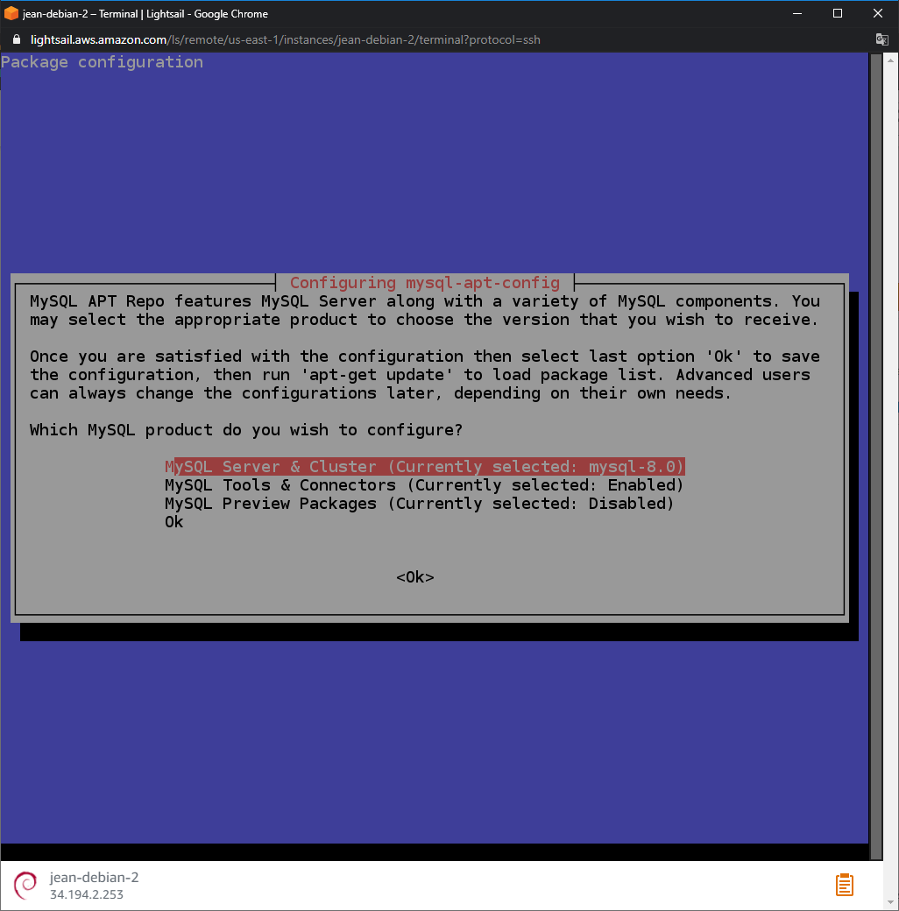
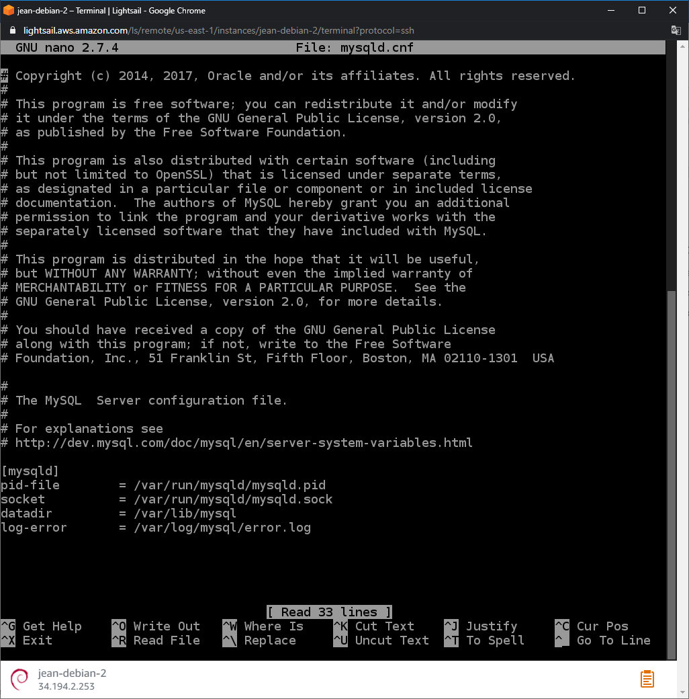
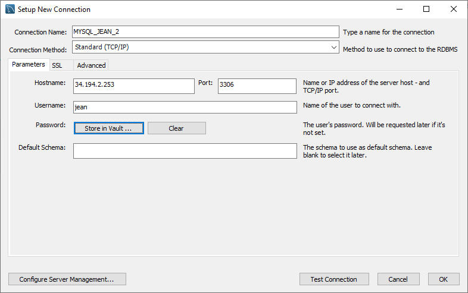
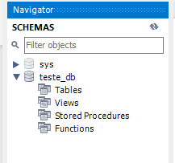

Olá pessoal! Tudo bem com vocês?
Hoje ensinarei a vocês a como criar uma máquina virtual no Amazon Lightsail para hospedar um banco de dados mysql e acessá-lo remotamente.
O Lightsail é uma plataforma de nuvem fácil de usar que oferece tudo o que você precisa para criar um aplicativo ou site, além de um plano mensal de baixo custo.
Você pode acessar o site pelo link: https://aws.amazon.com/pt/lightsail/
Após acessar o link acima clique no botão "Comece a usar gratuitamente", como mostrado na imagem a seguir.
Agora basta criar uma conta e colocar os dados de cobrança, além do Lightsail você tem acesso a varios outros recursos gratuitamente na aws. Após criar a conta e realizar o login você pode acessar o Lightsail por este link https://lightsail.aws.amazon.com/
Esta é a página de criação de instância, você pode escolher vários locais e imagens para sua instância. A que escolheremos hoje será a plataforma Linux/Unix, e usaremos apenas o OS e o Debian 9.5, como mostrado na imagem abaixo:
Vamos escolher o plano de $3,50 que é grátis no primeiro mês.
Coloque um nome para sua instância e clique no botão “Create instance”
Após criado você terá sua máquina funcionando:
Clique no botão lateral da div da máquina e esolha a opção “Manage”, você terá uma página parecida com essa:
Vá em “Networking” e na div de IP addresses clique no botão create static IP
E crie um IP estático.
Vá em “Networking” novamente e na parte de “Firewall” clique em Add rule.
Em Application selecione Mysql/Aurora e clique em create.
Agora vamos acessar nossa máquina via ssh para instalarmos o banco de dados.
Após se conectar ao terminal da máquina digite os comandos a seguir:
$ sudo apt update
$ sudo apt upgrade
O MySQL fornece um .deb pacote que se trata da configuração e instalação oficial do MySQL, você pode ver a última versão no site:
https://dev.mysql.com/downloads/repo/apt/
Importante, é aconselhável você sempre utilizar a versão mais recente para isso basta você copiar o nome no pacote sem os parenteses:
E substituir no comando abaixo a partir do get/, caso seja uma versão diferente da que estamos utilizando aqui.
$ cd /tmp
$ wget https://dev.mysql.com/get/mysql-apt-config_0.8.15-1_all.deb
Verifique se o arquivo foi baixado corretamente usando o comando ls Você terá uma saída como parecida com essa:
mysql-apt-config_0.8.15-1_all.deb
Agora vamos instalar, use o comando:
$ sudo dpkg -i mysql-apt-config*
O commando deverá resultar em uma tela como essa:
Dpkg é usado para instalar, remover e inspecionar .debpacotes de software. O -i sinalizador indica que gostaríamos de instalar a partir do arquivo especificado.
Nesta parte você poderá escolher qual versão do mysql e outras configurações você deseja, após selecionados basta selecionar o Ok:
O pacote agora terminará de adicionar o repositório. Atualize o aptcache do seu pacote para disponibilizar os novos pacotes de software:
$ sudo apt update
Após adicionarmos o repositório e nosso cache de pacotes atualizado, podemos instalar o pacote do servidor MySQL:
$ apt install mysql-server
Coloque uma senha simples, logo adiante atualizaremos o formato de senha.
Selecione a primeira opção.
Após a instalação você pode verificar o status do serviço MySQL usando o comando:
$ sudo systemctl status mysql
Você terá uma saída como essa:
admin@ip-172-26-11-229:/tmp$ sudo systemctl status mysql
● mysql.service - MySQL Community Server
Loaded: loaded (/lib/systemd/system/mysql.service; enabled; vendor preset: enabled)
Active: active (running) since Wed 2020-08-19 22:39:47 UTC; 48s ago
Docs: man:mysqld(8)
http://dev.mysql.com/doc/refman/en/using-systemd.html
Process: 23489 ExecStartPre=/usr/share/mysql-8.0/mysql-systemd-start pre (code=exited, s
Main PID: 23524 (mysqld)
Status: "Server is operational"
Tasks: 39 (limit: 4915)
CGroup: /system.slice/mysql.service
└─23524 /usr/sbin/mysqld
Aug 19 22:39:46 ip-172-26-11-229 systemd[1]: Starting MySQL Community Server...
Aug 19 22:39:47 ip-172-26-11-229 systemd[1]: Started MySQL Community Server.
O MySQL vem com um comando que podemos usar para realizar algumas atualizações relacionadas à segurança em nossa nova instalação. Vamos executá-lo agora:
$ mysql_secure_installation
Será solicitado sua senha raiz, digite-a e pressione enter.
Algumas perguntas serão feitas, para você selecionar o uso do plugin de validação de senha do mysql, digite Y.
Selecione o tipo de senha que você deseja usar, neste caso usaremos o tipo 2, então digite 2.
Digite Y para mudar sua senha de root padrão.
Digite sua nova senha, aconselho a usar o site https://passwordsgenerator.net/ e selecionar o tipo STRONG.
IMPORTANTE NÃO UTILIZE SENHAS QUE POSSUAM OS CARACTERES ‘ ou ", POIS
PODEM LHE CAUSAR PROBLEMAS
NO
MOMENTO DE CRIAR USUÁRIOS PARA O BANCO.
Gere uma senha, cole no prompt do s.o e salve-a em um local seguro.
Após trocar a senha digite Y para confirmar.
Digite Y para remover usuarios anonimos na proxima pergunta.
Digite Y para remover acesso remoto do root.
Digite Y se você quiser remover as tabelas de testes.
Digite Y para atualizar os privilegios.
Use o comando abaixo:
$ sudo mysqladmin -u root -p version
Use a senha criada anteriormente.
Se você obteve uma saída parecida com essa Parabéns seu MySQL foi instalado com sucesso:
mysqladmin Ver 8.0.21 for Linux on x86_64 (MySQL Community Server - GPL)
Copyright (c) 2000, 2020, Oracle and/or its affiliates. All rights reserved.
Oracle is a registered trademark of Oracle Corporation and/or its
affiliates. Other names may be trademarks of their respective
owners.
Server version8.0.21
Protocol version10
ConnectionLocalhost via UNIX socket
UNIX socket/var/run/mysqld/mysqld.sock
Uptime:16 min 50 sec
Threads: 2 Questions: 14 Slow queries: 0 Opens: 128 Flush tables: 3 Open tables: 49
Queries per second avg: 0.013
Vamos precisar agora configurar o arquivo my.cnf para permitir o acesso remoto.
Para editar o arquivo execute o comando no diretório raiz:
$ sudo nano /etc/mysql/mysql.conf.d/mysqld.cnf
Você terá uma saída parecida com essa:
Se o seu arquivo não possuir a linha bind-address, adicione ela após as configurações do
[mysqld] usando
o ip 0.0.0.0, como mostrado na imagem abaixo:
Salve o arquivo pressionando ctrl + x, depois y, depois ENTER.
Esta configuração irá servir para que você possa acessar o banco usando um IP dinâmico.
Caso o arquivo não existir, provavelmente deve estar em outro diretório da máquina, será necessário localizá-lo para realizar as modificações.
Agora vamos criar os Usuários!
Use o comando a seguir para acessar o terminal do mysql na máquina.
$ sudo mysql -u root -p
Vamos criar primeiro o usuário local, digite o SQL a seguir colocando o nome de usuário desejado:
CREATE USER 'SEU_USUARIO'@'localhost' IDENTIFIED BY 'SUA_SENHA'
Lembre-se de criar uma senha do tipo STRONG para ele e se atentando para que não contenha os
caractres ' ou " na senha.
Agora vamos criar um usuário para um IP qualquer:
CREATE USER 'SEU_USUARIO'@'%.%.%.%' IDENTIFIED BY 'SUA_SENHA'
Vamos criar um usuário para o IP 0.0.0.0 e um com o % apenas, caso ele venha de um DNS:
CREATE USER 'SEU_USUARIO'@'0.0.0.0' IDENTIFIED BY 'SUA_SENHA'
CREATE USER 'SEU_USUARIO'@'%' IDENTIFIED BY 'SUA_SENHA'
CREATE USER 'SEU_USUARIO'@'0' IDENTIFIED BY 'SUA_SENHA'
Agora precisamos definir privilégios para os usuários.
IMPORTANTE Nenhum usuário pode ser criado usando o comando WITH GRANT OPTION, para que esses usuários não possam criar outros usuários com os mesmos privilégios que ele possuí. Você pode estudar mais a fundo sobre permissões para que sua instância fique segura.
Vamos utilizar os comandos:
GRANT ALL PRIVILEGES ON *.* TO 'SEU_USUARIO'@'localhost';
GRANT ALL PRIVILEGES ON *.* TO 'SEU_USUARIO'@'0.0.0.0';
GRANT ALL PRIVILEGES ON *.* TO 'SEU_USUARIO'@'%.%.%.%';
GRANT ALL PRIVILEGES ON *.* TO 'SEU_USUARIO'@'%';
GRANT ALL PRIVILEGES ON *.* TO 'SEU_USUARIO'@'0';
Agora precisamos atualizar a tabela de privilégios:
FLUSH PRIVILEGES;
Use o comando exit
E reinicie o mysql:
$ sudo service mysqld restart
Vamos agora configurar uma conexão e testar nossa conectividade, vamos utilizar o MySQL Workbench, você pode usar qualquer outro desde que tenha compatibilidade com a versão do mysql que você instalou.
Vamos utilizar aqui como HOST o IP estático que criamos na máquina virtual no Lightsail. Username será o usuário que criamos no MySQL e a senha será a senha deste usuário.
Clique em Test Conection.
Caso nenhum erro aconteça, Parabéns agora você possuí um banco de dados remoto para usar em suas aplicações!
Você pode acessar a instância e criar bancos de testes e realizar queries.
Espero que este tutorial tenha ajudado você e que seja de grande proveito, estude bastante isso é sempre importante.
Um grande abraço!